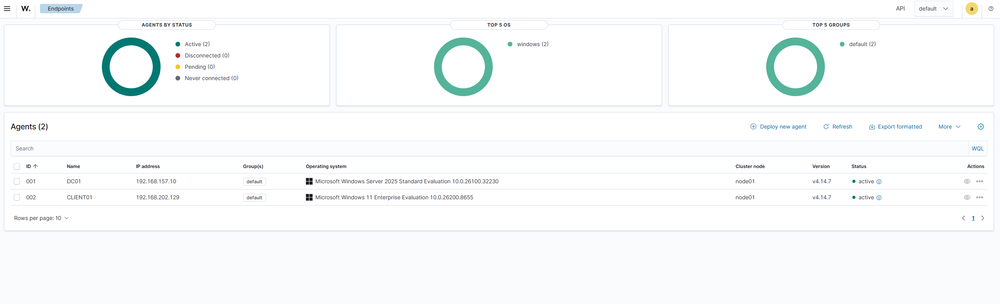
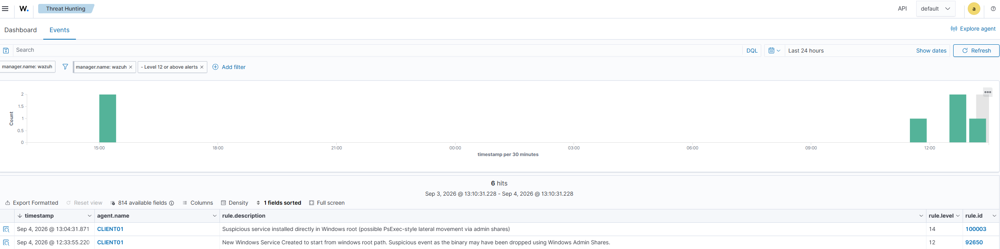
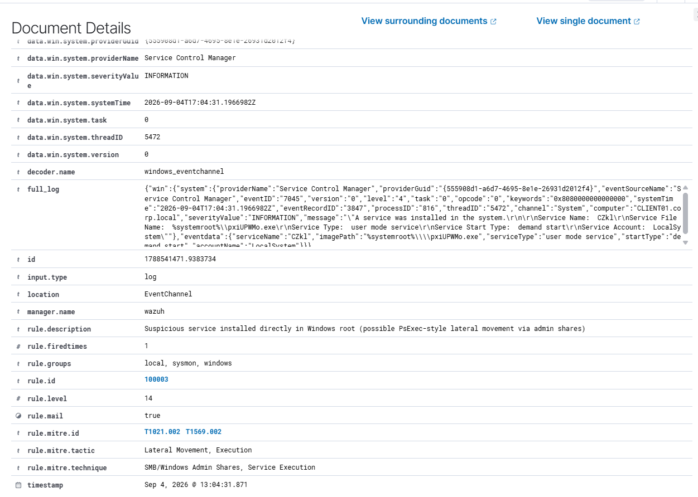
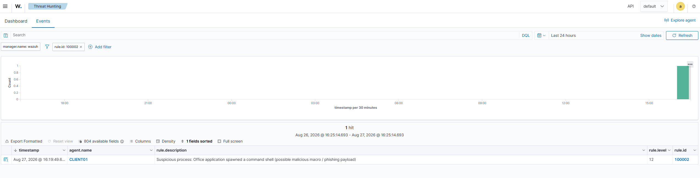
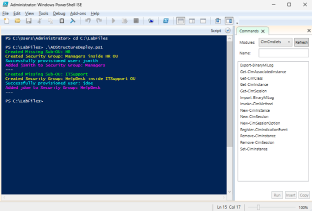
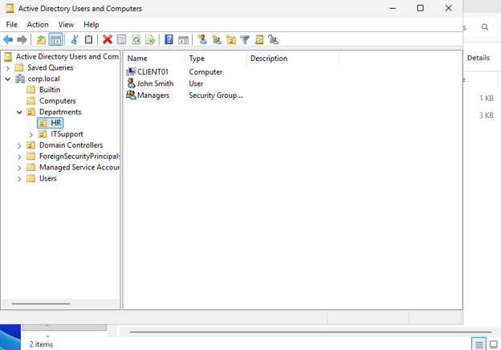

Homelab
Each project: what I built, and why it matters to an IT or security team.
SOC Detection Lab: Wazuh + Sysmon + Kali
What I built: A self-hosted Wazuh SIEM (Ubuntu Server) layered on my Active Directory lab, with agents and Sysmon (SwiftOnSecurity config) on the domain controller and a Windows 11 client. I wrote custom detection rules and validated them against attacks launched from a Kali VM on an isolated network.

Rule 100003: PsExec-style lateral movement (T1021.002, T1569.002)
Fires on Windows Event 7045 (new service) when the binary path sits directly in the Windows root. My first version matched the service name PSEXESVC and missed every real Impacket run, because Impacket randomizes the name. Wazuh's default rule still fired because it matched the path.
<field name="win.system.eventID">^7045$</field> <field name="win.eventdata.imagePath" type="pcre2"> (?i)^%systemroot%\\\\[^\\\\]+\.exe$ </field>


Why it matters: A rule tied to an indicator (a name) is defeated by changing one variable. A rule tied to behavior the technique forces on the attacker survives that. Defender quarantined the payload, but the 7045 event was logged first, so Wazuh still alerted. Prevention and detection worked as independent layers.
Rule 100002: Office app spawning a shell (T1204.002, T1059.001)
Fires on Sysmon process creation where Word, Excel or Outlook is the parent and PowerShell or cmd is the child, the classic malicious-macro pattern. I tested it without an Office license by renaming cmd.exe to winword.exe, since Sysmon tracks the path of the running image.

Full writeup and screenshots on GitHub →
Enterprise Active Directory Lab (VMware)
What I built: A domain with AD DS, DNS and DHCP, a domain-joined Windows 11 client, and OUs and security groups. I automated user provisioning from a CSV with PowerShell (New-ADUser, New-ADGroup, Add-ADGroupMember).


Why it matters: I hardened it with Group Policy: LLMNR and NetBIOS disabled, firewall logging, and advanced audit policies for Kerberos, logon and process creation. That gives a SIEM the telemetry a SOC analyst depends on.
More projects
- PsExec lateral movement alert analysis: alert triage and mitigation write-up from the ReliaQuest SOC simulation.
- HTTP beaconing and reverse shell PCAP investigation: network forensics on suspicious internal-host traffic.
- Hack The Box penetration testing labs
- Home network security assessment